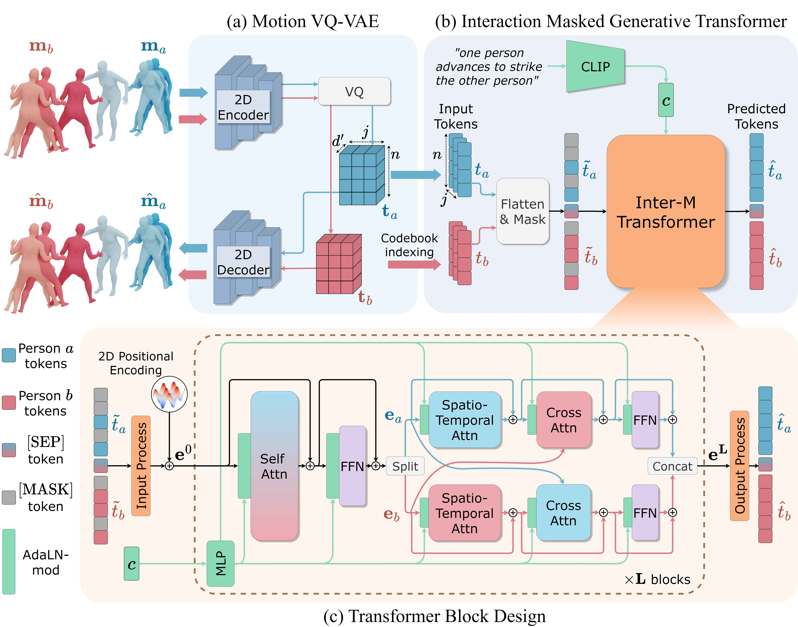

Generating realistic 3D human-human interactions from textual descriptions remains a challenging task. Existing approaches, typically based on diffusion models, often generate unnatural and unrealistic results. In this work, we introduce InterMask, a novel framework for generating human interactions using collaborative masked modeling in discrete space. InterMask first employs a VQ-VAE to transform each motion sequence into a 2D discrete motion token map. Unlike traditional 1D VQ token maps, it better preserves fine-grained spatio-temporal details and promotes spatial awareness within each token. Building on this representation, InterMask utilizes a generative masked modeling framework to collaboratively model the tokens of two interacting individuals. This is achieved by employing a transformer architecture specifically designed to capture complex spatio-temporal interdependencies. During training, it randomly masks the motion tokens of both individuals and learns to predict them. In inference, starting from fully masked sequences, it progressively fills in the tokens for both individuals. With its enhanced motion representation, dedicated architecture, and effective learning strategy, InterMask achieves state-of-the-art results, producing high-fidelity and diverse human interactions. It outperforms previous methods, achieving an FID of 5.154 (vs 5.535 for in2IN) on the InterHuman dataset and 0.399 (vs 5.207 for InterGen) on the InterX dataset. Additionally, InterMask seamlessly supports reaction generation without the need for model redesign or fine-tuning.

We compare InterMask against a strong diffusion model baseline approach, InterGen. In contrast to InterGen, InterMask exhibits superior motion and interaction quality, text adherence and avoidance of implicit biases.
InterGen
InterMask
InterGen
InterMask
InterGen
InterMask
InterGen
InterMask
We showcase InterMask's capability to perform the reaction generation task, where the motion of one individual is generated depending on the provided reference motion of the other, with and without text descriptions. The reference motion is shown in pink, and the generated motion is shown in blue.
@article{javed2024intermask,
title = {InterMask: 3D Human Interaction Generation via Collaborative Masked Modelling},
author = {Javed, Muhammad Gohar and Guo, Chuan and Cheng, Li and Li, Xingyu},
year={2024},
eprint = {2312.00063},
archivePrefix = {arXiv},
primaryClass = {cs.CV}
}